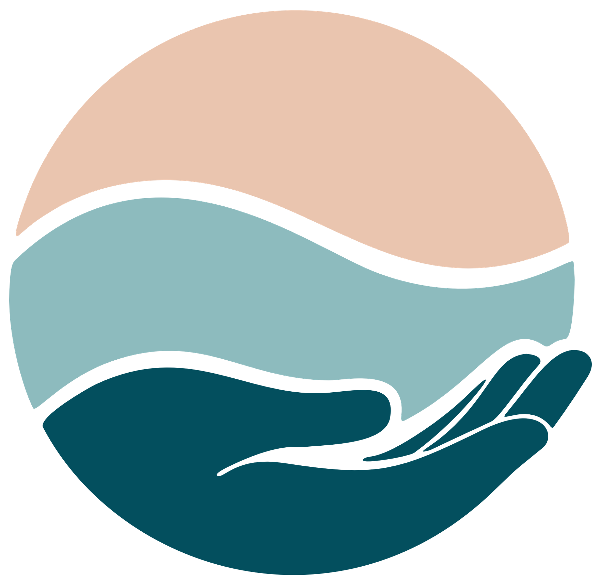
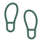

Oncology Physiotherapy · Sunshine Coast
Next Wave Cancer Rehab
Guided by experience. Driven by care.
Next Wave Cancer Rehab provides experienced oncology physiotherapy and cancer rehabilitation from two Sunshine Coast locations, with Telehealth also available.
The focus is simple: helping you safely restore movement, rebuild strength, and regain confidence, in collaboration with your treating team.

About Next Wave
Principal Physiotherapist and Founder, Next Wave Cancer Rehab
Next Wave Cancer Rehab is led by Megan Oster, an experienced oncology physiotherapist based on the Sunshine Coast. With over a decade of physiotherapy practice across Australia and the United Kingdom, Megan supports people through every stage of the cancer experience, from diagnosis and treatment to survivorship and advanced illness.
Care is calm, private, and individualised, and always works alongside your medical team. The aim is to help you understand what is happening, what is safe, and how to move forward at your pace.
How Next Wave Can Help
Cancer care physiotherapy can help you manage the physical effects of cancer and its treatment, at any stage from diagnosis through to survivorship. Care is always tailored to your individual needs. Common areas of support include:
Pre & Post-Operative Care
Preparation before surgery and support through recovery afterwards.
Breast Cancer Rehabilitation
Support for shoulder, chest, and arm movement after treatment.
Scar Management
Improving comfort, sensation, and movement around scar tissue.
Side Effect Management
Help with fatigue, joint pain, tightness, and other side effects.
Pain Management
Understanding pain and moving with greater comfort and confidence.
Exercise Rehabilitation
Rebuilding strength, fitness, and movement at a safe, steady pace.
Physical Activity Guidance
Safe, achievable activity during and after cancer treatment.
Functional Assessment & Return to Activity
Getting back to work, exercise, and everyday life.
Your Next Steps
Cancer rehabilitation isn’t only for after treatment. It can support you at any stage, from diagnosis through treatment, survivorship, and advanced illness.
Preventative Rehabilitation
Prepare for treatment and get ahead of side effects before they build.

Restorative Rehabilitation
Regain strength, movement, and independence after treatment or surgery.
Survivorship Rehabilitation
Bridge the gap between finishing treatment and life afterwards.
Palliative Rehabilitation
Maintain comfort, function, and quality of life with advanced illness.
You don’t need a referral to get started. Your first appointment is a 60-minute consultation to understand your goals and plan a way forward that suits you.
Get in Touch
Whether you’re a patient, a family member, or a referring health professional, getting in touch is simple.
Phone 0493 007 436
Telehealth appointments are available for those unable to attend in person.
Locations Sessions run from two Sunshine Coast locations: Cancer Care Noosa in Noosaville (Mondays) and Sycamore Health in Sippy Downs (Tuesdays and Thursdays). View locations and maps.